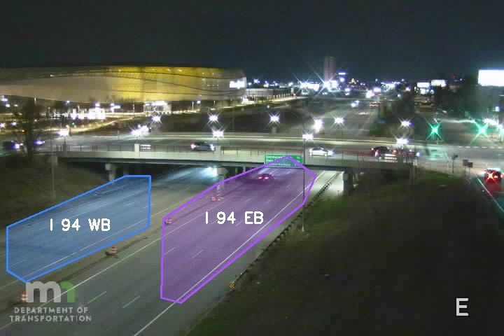
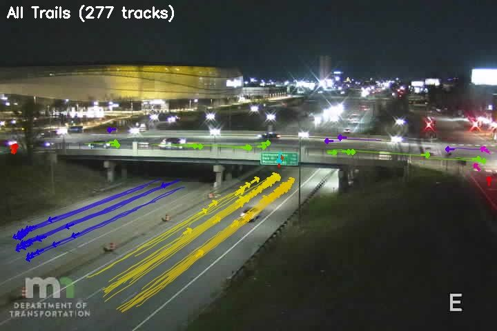
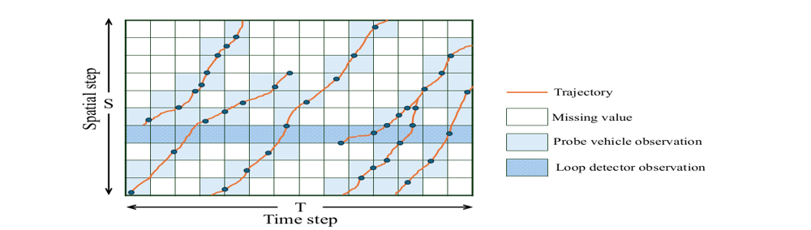

Sponsored research led or co-led by MTO co-directors. Sources: Experts@Minnesota and co-director CVs.
Featured projects


Road regions Vehicle tracks
Recorded example · MnDOT camera, I-94 MNDOT · CHOI GROUP · 2025–2027 Automatic fault detection for Minnesota’s traffic detector network MnDOT runs about 7,000 loop and radar detectors and 2,000 highway cameras, but a failing detector has no independent check. The camera2detector platform runs YOLO vehicle detection on camera feeds, matches each camera to nearby detectors along the road geometry, and compares counts and occupancy every 30 seconds so operators can spot faulty sensors.
camera2detector code ↗

Figure from PMA-Diffusion (TR Part C, 2026) UMN DATA SCIENCE INITIATIVE · CHOI GROUP · 2026 Physics-informed generative models for traffic state estimation Loop detectors and probe vehicles observe only a small part of a highway’s space-time speed field. This work uses generative models guided by traffic physics to reconstruct the full field and to inform where sensors should be placed. Related work, PMA-Diffusion, reconstructs I-24 MOTION speed fields at as little as 5% visibility.
PMA-Diffusion paper ↗
Try the interactive version on the home page NATIONAL SCIENCE FOUNDATION · STERN GROUP · 2025–2030 CAREER: physics-informed modeling for next-generation traffic control A small number of automated vehicles can smooth traffic for everyone, as Stern’s 2016 ring-road field experiment showed. This NSF CAREER project develops physics-informed models for the next generation of traffic control.
Ring-road experiment video ↗ 2018 paper ↗
All funded projects
All topics AI & data Automated vehicles Planning Safety Traffic control Training Walking & biking
Both groups Choi Stern Joint
Active (17)
MNDOT · AUG 2026 – AUG 2028 Creating a Real-Time Road Safety Evaluation of Collision Risks Based on Traffic State Estimation PI: M. W. Levin · Co-PI: Raphael Stern
Safety
MNDOT · AUG 2026 – JUL 2028 Situational Awareness Alerts for Roadside Bicycles and Pedestrians PI: Raphael Stern · Co-PI: Alireza Khani
Safety Walking & biking
MNDOT · JUL 2026 – JUN 2028 Img2Speed: Generative AI and Multimodal Machine Learning for Predicting Operating Speed Distributions from Roadway Design and Context PI: Seongjin Choi · Co-PI: Raphael Stern
Safety AI & data
UNIVERSITY OF MINNESOTA CTS · FEB 2026 – JAN 2027 Embedding Human-Understandable Symbolic Rules into Vision-Language Decision Systems for Safe, Transparent, and Ethical Autonomous Driving PI: Seongjin Choi
Safety Automated vehicles AI & data
UMN DATA SCIENCE INITIATIVE · JAN 2026 – DEC 2026 Physics-Informed Generative Model for High-Resolution Traffic State Estimation and Optimal Sensor Placement PI: Seongjin Choi · GenAI4Science Seed Project
AI & data
MNDOT · OCT 2025 – JUN 2027 Data Quality Assessment and Automatic Fault Detection for Traffic Detector Network PI: Seongjin Choi
AI & data
SRF CONSULTING GROUP & MNDOT · OCT 2025 – JUN 2030 Traffic Training Program PIs: Raphael Stern, A. J. Wrucke
Training
MNDOT · SEP 2025 – JUN 2027 Evaluating Pedestrian Considerations for Transit Advantage at Roundabouts PI: Raphael Stern
Walking & biking Safety
MNDOT · SEP 2025 – AUG 2027 Bike Infrastructure Planning Based on Mobile-Sourced Data and Anticipated Route Shifts PI: M. W. Levin · Co-PIs: Alireza Khani, Raphael Stern
Walking & biking Planning
MNDOT · AUG 2025 – JUN 2027 Leveraging C-V2X and Advanced Communications/Sensing for Rural Road Safety PIs: Raphael Stern, Z.-L. Zhang
Safety AI & data
MNDOT · AUG 2025 – MAY 2027 Operational Characteristics of Conventional and Electric-Assisted Bicycles and Their Riders PIs: G. H. Lindsey, Raphael Stern
Walking & biking
MNDOT · AUG 2025 – JUN 2027 Tribal Pedestrian Safety Project: Phase 3 PIs: G. H. Lindsey, Raphael Stern
Walking & biking Safety
MNDOT & LRRB · AUG 2025 – JUN 2027 Estimating Likely Mode Shift and VMT Reduction Potential Using TBI Data and AI Algorithms PI: Alireza Khani · Co-PIs: Seongjin Choi, M. W. Levin
Planning AI & data
NATIONAL SCIENCE FOUNDATION · MAY 2025 – APR 2030 CAREER: Physics-Informed Modeling for Next-Generation Traffic Control PI: Raphael Stern
Traffic control
NATIONAL RESEARCH FOUNDATION OF KOREA · MAR 2025 – MAR 2029 K-Health-Mobility: Multi-Layer Digital Twin of Healthcare and Mobility for Vulnerable Groups Using a Synthetic Population of an Aging Society PI: Woo · Co-PI: Seongjin Choi
Planning AI & data
NATIONAL SCIENCE FOUNDATION · SEP 2024 – AUG 2027 EAGER: How Well Does Traffic Control Theory and Optimization Research Work on Public Roads? PI: M. W. Levin · Co-PI: Raphael Stern
Traffic control
USDOT (VIA UNIVERSITY OF MICHIGAN) · JUN 2023 – MAY 2029 2022 Regional UTC: Center for Connected and Automated Transportation PIs include Raphael Stern
Automated vehicles
Completed (12)
UNIVERSITY OF MINNESOTA CTS · JUL 2024 – JUN 2026 Digitizing Minnesota Transportation Observatory Data PI: Seongjin Choi
AI & data
Browse the MTO data archive ↗ CTS FACULTY FELLOWS · JUL 2024 – JUN 2026 A General Framework for Probabilistic Traffic Data Imputation and Forecasting as an Inverse Problem Using Deep Generative Priors PI: Seongjin Choi
AI & data
KOREA TRANSPORT INSTITUTE · JUL 2025 – FEB 2026 Simulation-Driven Retrieval-Augmented Generation for Numerically Grounded AI in Transportation PI: Seongjin Choi
AI & data
MNDOT & FHWA · JUL 2023 – DEC 2025 Using Electric Vehicle Onboard Data for Pavement Quality Assessment and Management PI: M. Marasteanu · Co-Is: Q. He, Raphael Stern
AI & data
MNDOT · SEP 2022 – JUN 2025 Understanding Risks and Opportunities for Ramp Metering Control in a Mixed Autonomy Future PI: Raphael Stern
Traffic control Automated vehicles
MNDOT · AUG 2022 – OCT 2024 Towards Implementation of Max-Pressure Control on Minnesota Roads: Phase 2 PI: Raphael Stern · Co-I: M. W. Levin
Traffic control
MNDOT · JUN 2021 – JUN 2024 Mobile-Device Data, Non-Motorized Traffic Monitoring, and Estimation of Annual Average Daily Bicyclist and Pedestrian Flows PIs: G. H. Lindsey, Raphael Stern · Co-I: M. W. Levin
Walking & biking AI & data
MNDOT · JUL 2020 – DEC 2023 Driver Comprehension of Flashing Yellow Arrows PI: Gary Davis · Co-Is: John Hourdos, Raphael Stern
Safety
MNDOT & USDOT · MAY 2021 – NOV 2023 Identifying Deer-Vehicle Collision Concentrations in Minnesota PIs: M. L. Duhn, R. Moen, Raphael Stern
Safety
MNDOT · JUL 2020 – JUN 2023 Guidelines for Safer Pedestrian Crossings: Factors That Influence Driver Yielding to Pedestrians at Unsignalized Intersections PIs: John Hourdos, Raphael Stern
Walking & biking Safety
MNDOT · SEP 2018 – MAR 2023 Evaluation and Refinement of Minnesota Queue Warning Systems PI: Raphael Stern · Prior PI: John Hourdos
Safety Traffic control
NATIONAL SCIENCE FOUNDATION · JUL 2020 – JUN 2021 RAPID: Using Data to Understand the Effects of Transportation on the Spread of COVID-19 PI: Raphael Stern
AI & data